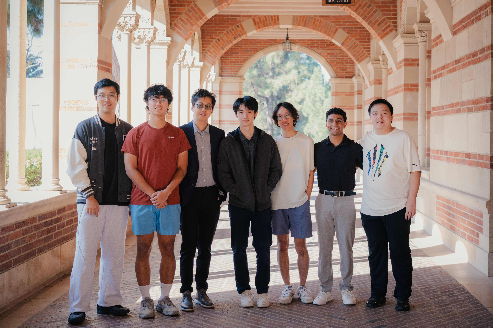

Join Us
We are actively recruiting postdocs, PhD students, visiting scholars, and research interns passionate about AI for health, medicine, and scientific discovery.

PhD Students
Prospective PhD students should apply through one of the following graduate programs: (1) UCLA Computer Science, (2) UCLA Computational Medicine, or (3) UCLA Medical Informatics. Please be sure to list Prof. Yuzhe Yang as a potential advisor in the application system, and state your specific research interests and how they align with our lab's work. Filling out the lab interest form can help flag your application.
Postdoctoral Researchers
We have 1-2 openings for postdoctoral researcher positions, with flexible start dates as early as possible. We welcome applicants with strong backgrounds in foundation models, multimodal learning, generative AI, agentic systems, large-scale pretraining and management, health LLMs, or closely related areas. Please email the PI directly with a CV, a brief research statement, and two to three representative publications (subject: Prospective Postdoc).
Interns and Visiting Students
We welcome interns and visiting students interested in research opportunities and hands-on research projects in our lab. We prioritize students with prior AI/ML project experience. Before reaching out, you should first finish the take-home test below:
Take-home test
Please read the Deep Imbalanced Regression (DIR) paper first. In this take-home test, try to adapt the DIR code to the SkyFinder dataset for temperature prediction and see what results you can get. Think of this as an open-ended problem: you can formulate your own task, process the dataset in any way you want, and run the experiments.
You are expected to write a small report based on your findings, lessons learned, and how one could improve upon it. Feel free to share anything related to code, experiments, and analysis.
To apply, please send an email to Prof. Yuzhe Yang with your CV, a brief description of your research interests and relevant experience, and the report from the take-home test (subject: Prospective Intern). Please also fill out the lab interest form.
Other Collaborators
The lab has had successful collaborations with academic researchers, industry partners, frontier labs, startups, clinicians, biotech companies, and others. We are always open to potential collaborations. Please email the PI directly.
Contact
Email: yuzhey [at] ucla [dot] edu
Location: 107-200B CHS, 650 Charles Young Drive South, Los Angeles, CA 90095